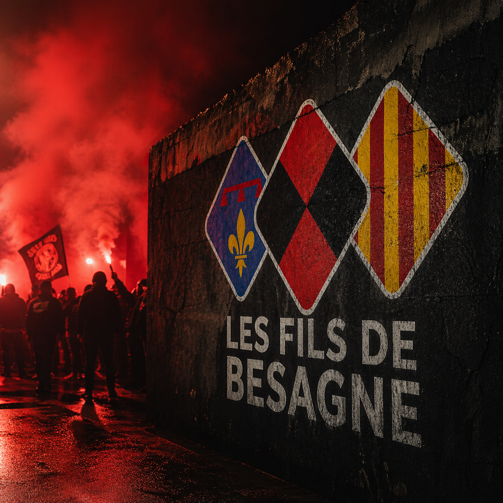
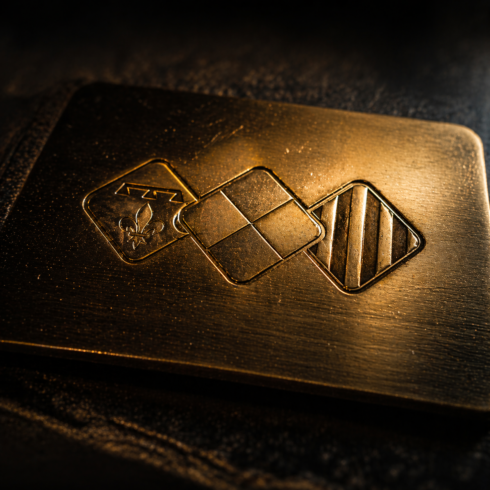
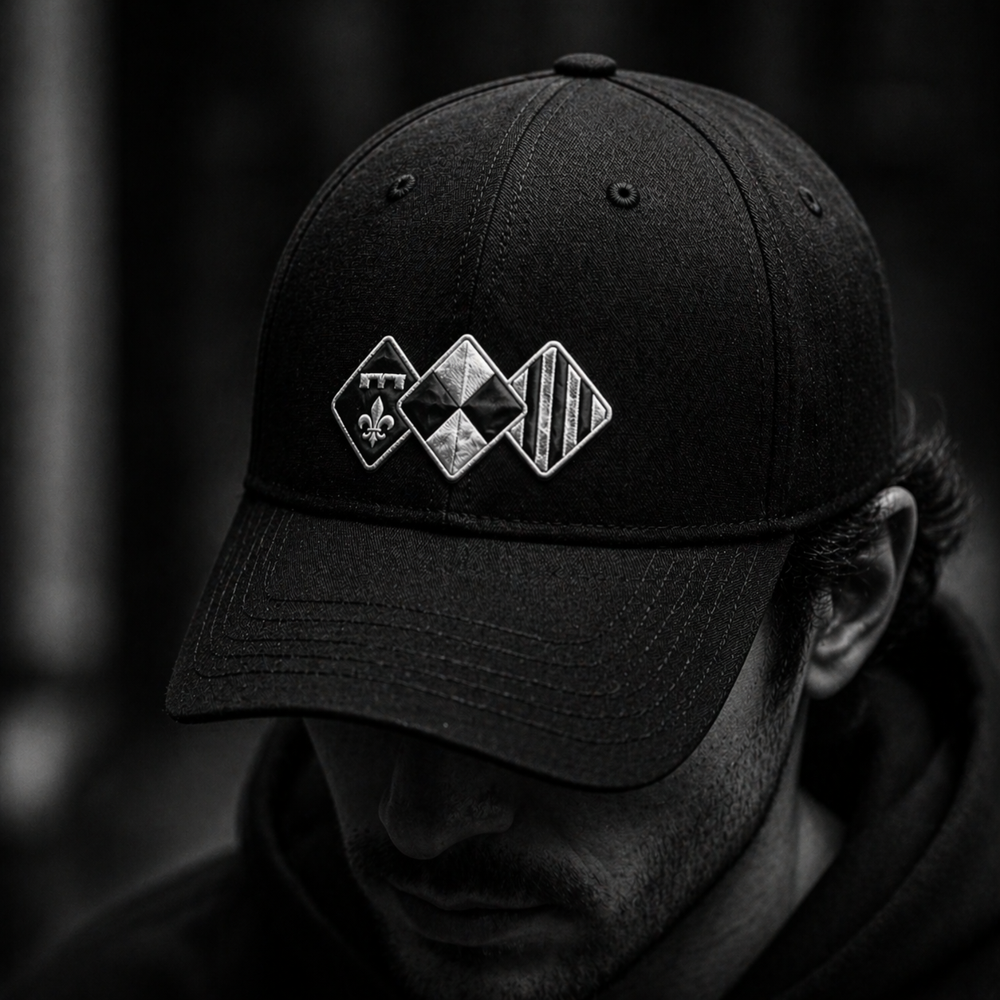

Votre identité n'est pas un simple logo. C'est un arsenal conçu pour transformer chaque prise de parole en un acte d'autorité. Pour les membres de la #FDBFAMILY, c'est un point de ralliement. Pour TOUS les autres, c'est le signe de votre professionnalisme.
La puissance du Rouge RCT alliée au Noir historique. À utiliser sur fond sombre pour un impact maximal.

Pour les moments de célébration, les victoires et les contenus premium. Évoque l'excellence et le trophée.


Épuré, radical. Idéal pour les avatars, les filigranes sur les photos et les rappels discrets d'identité.

Pourquoi ? C'est la passion, le sang versé sur le terrain, l'identité de Toulon. Il capte l'attention instantanément.
Pourquoi ? Il représente l'acier de l'Arsenal, l'histoire et la solidité. Il apporte la profondeur et le sérieux.
Pourquoi ? Pour ne jamais oublier l'objectif : la victoire. Il élève la marque vers un standing supérieur.
Pourquoi Ysabeau ? Ses empattements massifs rappellent la gravure sur pierre et les titres de journaux historiques. Elle impose le respect par sa stabilité, tout en restant moderne par ses courbes fluides. C'est la voix d'un leader qui n'a pas besoin de crier.

Chaque photo utilisée doit passer par le traitement "FDB". On assombrit, on sature le rouge, on crée une atmosphère de film. C'est ce qui fait que votre contenu ne ressemble à aucun autre.
Votre outil de production est prêt. Plus besoin de tâtonner sur Photoshop. En 3 clics, vous générez un asset parfait, respectant chaque règle de l'arsenal. C'est votre avantage tactique pour être le premier sur l'info.
Lancer le Générateur